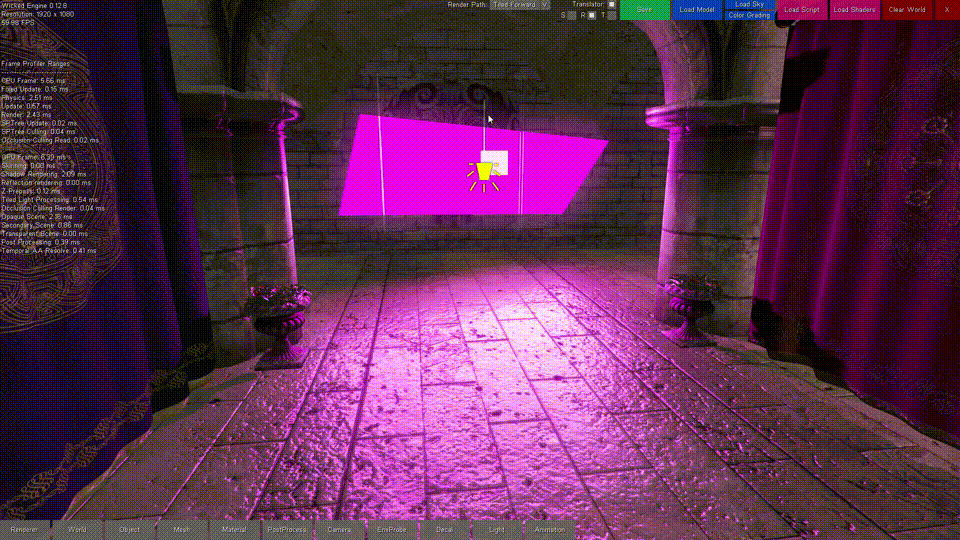
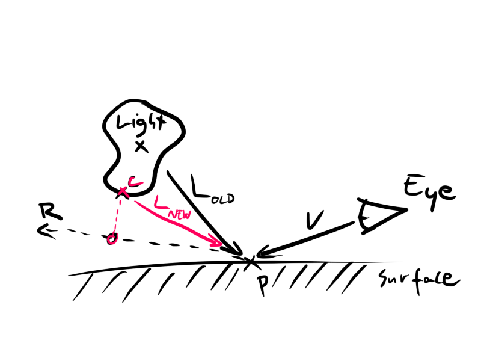

Area Lights

I am trying to get back into blogging. I thought writing about implementing area light rendering might help me with that.
If you are interested in the full source code, pull my implementetion from the Wicked Engine lighting shader [archived link to old source code version]. I won’t post it here, because I’d rather just talk about it.
A 2014 Siggraph presentation from Frostbite caught my attention for showcasing their research on real time area light rendering. When learning graphics programming from various tutorials, there is explanations for punctual light source rendering, like point, spot and directional lights. Even most games get away with using these simplistic light sources.
For rendering area lights, we need much more complicated light equations and more performance requirements for our shaders. Luckily, the above mentioned presentation came with a paper with all the shaders for diffuse light equations for spherical, disc, rectangular and tube light sources.
The code for specular lighting for these type of lights was not included in that paper, but it mentioned the “representative point method“. What this technique essentially does is that you keep the specular calculation, but change the light vector. The light vector was the vector pointing from the light position to the surface position. But for our lights, we are not interested in the reflection between the light’s center and the surface, but between the light “mesh” and the surface.
Representative point method
If we modify the light vector to point from the surface to the closest point on the light mesh to the reflection vector, then we can keep using our specular BRDF equation and we will get a nice result; the specular highlight will be in the shape of the light mesh (or somewhere close to it). It is important, that this is not a physically accurate model, but it is something nice which is still performant in real time.
My first intuition was just that we could trace the mesh with the reflection ray. Then our light vector (L) is the vector from the surface point (P) to the intersection point (I), so L=I-P. The problem is, what if there is no intersection? Then we won’t have a light vector to feed into our specular brdf. This way we are only getting hard cutoff reflections, and surface roughness won’t work because the reflections can’t be properly “blurred” on the edges where there is no trace hit.
The correct approach to this is, that we have to find the closest point on mesh from the reflection ray. If the trace succeeds, then our closest point is the hit point, if not, then we have to “rotate” the light vector to sucessfully trace the mesh. We don’t actually rotate, just find the closest point (C), and so our new light vector is: L=C-P.
See the image below (V = view vector, R = reflection vector):

For all our four different light types, we have to come up with the code to find the closest point.- Sphere light:
- This one is simple: first, calculate the real reflection vector (R) and the old lightvector (L). Additional symbols: surface normal vector (N) and view vector (V).
R = reflect(V, N);centerToRay = dot(L,R) * R - L;closestPoint = L + centerToRay * saturate(lightRadius / length(centerToRay));
- This one is simple: first, calculate the real reflection vector (R) and the old lightvector (L). Additional symbols: surface normal vector (N) and view vector (V).
- Disc light:
- The idea is, first trace the disc plane with the reflection vector, then just calculate the closest point to the sphere from the plane intersection point like for the sphere light type. Tracing a plane is trivial:
distanceToPlane = dot(planeNormal, (planeOrigin - rayOrigin) / dot(planeNormal, rayDirection));planeIntersectionPoint = rayOrigin + rayDirection * distanceToPlane;
- The idea is, first trace the disc plane with the reflection vector, then just calculate the closest point to the sphere from the plane intersection point like for the sphere light type. Tracing a plane is trivial:
- Rectangle light:
- Now this is a bit more complicated. The algorithm I use consists of two paths: The first path is when the reflection ray could trace the rectangle. The second path is, when the trace didn’t succeed. In that case, we need to find the intersection with the plane of the rectangle, then find the closest point on one of the four edges of the rectangle to the plane intersection point.
- For tracing the rectangle, I trace the two triangles that make up the rect and take the correct intersection if it exists. Tracing a triangle involves tracing the triangle plane, then deciding if we are inside the triangle. A, B, C are the triangle corner points.
planeNormal = normalize(cross(B - A, C - B));planeOrigin = A;t = Trace_Plane(rayOrigin, rayDirection, planeOrigin, planeNormal);p = rayOrigin + rayDirection * t
N1 = normalize(cross(B - A, p - B));N2 = normalize(cross(C - B, p - C)); N3 = normalize(cross(A - C, p - A));d0 = dot(N1, N2); d1 = dot(N2, N3); intersects = (d0 > 0.99) AND (d1 > 0.99); - The other algorithm is finding the closest point on line segment from point. A and B are the line segment endpoints. C is the point on the plane.
AB = B - A;t = dot(C - A, AB) / dot(AB, AB);closestPointOnSegment = A + saturate(t) * AB;
- Tube light:
- First, we should calculate the closest point on the tube line segment to R. Then just place a sphere on that point and do as we did for the sphere light (that is, calculate the closest point on sphere to the reflection ray R). Every algorithm is already described already to this point, so all that needs to be done is just put them together.
So what to do when you have the closest point on the light surface? You have to convert it to the new light vector: newLightVector = closestPoint – surfacePos.
When you have your new light vector, you can feed it to the specular brdf function and in the end you will get a nice specular highlight!
Shadows
With the regular shadow mapping techniques, we can do shadows for area lights as well. Results are again not accurate, but get the job done. In Wicked Engine, I am only doing regular cube map shadows for area lights like I would do for point lights. I can not say I am happy with them, especially for long tube lights for example. In an other engine however, I have been experimenting with dual paraboloid shadow mapping for point lights. I recommend a single paraboloid shadow map for the disc and rectangle are lights in the light facing direction. These are better in my opinion than regular perspective shadow maps, because they distort very much for high field of views (these light types would require near 180 degrees of FOV).
For the sphere and tube light types I still recommend cubemap shadows.
Original sources: